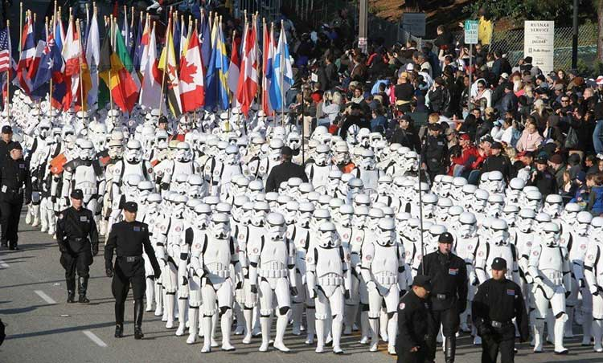

5月4日是什么节？可能大部分人都会说是青年节，但是对于另一个团体--星战迷来说，5月4日就是他们的狂欢节——星球大战日！星球大战日是著名电影《星球大战》（STAR WAR）中名句”May the force（谐音 forth） be with you（愿原力与你同在）”衍生出的节日。
星球大战日最早可追溯到1979年，“撒切尔夫人刚刚当选英国第一任女首相，为了祝贺她当选，执政党在《伦敦晚报》上刊登了半个版面的广告来写：“May the Fourth Be With You,Maggie.Congratulations！”此后，在5月4日这一天，在世界的每个角落都有忠实的星战粉丝喊出“愿原力与你同在”这句话，久而久之，这一天便被官方定为“星球大战日”（Star Wars Day），每年的5月4日也形成了重温星战文化的 传统。穿上盔甲、制作星战美食或者火腿索罗三明治，亦或是去迪士尼体验刺激的星球之旅。”
星球大战日到底有多火？世界各地的粉丝让你开开眼：在澳大利亚，星战主题橄榄球比赛吸引无数粉丝欢呼；在巴西、阿根廷、墨西哥，则举行了星球大战6公里长跑；意大利罗马斗兽场也被星战粉丝们“占领”，而这些只是全球星战迷庆祝活动的一部分。星战日庆祝活动范围甚至超出了地球！通过与美国太空总署NASA以及休斯敦太空中心合作，从国际空间站向全球粉丝传递了特别的节日祝福。
就在过去的2015年，星球大战日正经来到了中国，这可让我们全国的父（星）老（战）乡（粉）亲（丝）们乐出了鼻涕泡儿。在魔都，他们游行，他们cosplay，他们拿出自己的星战藏品如数家珍，现场气氛火爆至极，激动心情无以复加。
几乎所有的星战迷们都会一遍接着一遍的看着星战系列的电影，购买各种星战周边，从服装、日用品甚至到电影中的仿真道具，无不囊括。有数据显示，这些消费总额已经达到票房总收入的一倍半！可见我们全球两亿的星战迷们不仅全是铁托儿，而且看来还都是有点家底子的。
去年年底，随着《星球大战：原力觉醒》的上映，全球又掀起了一股星战热潮。想必今年的星球大战日绝对是看点极多，不容错过。愿原力与你同在，may the force be with you！
1、如果你是星战迷记得节日当天盛装出街最好来个完美cosplay，估计第二天就能见报；
2、愿原力与你同在！May the force be with you！